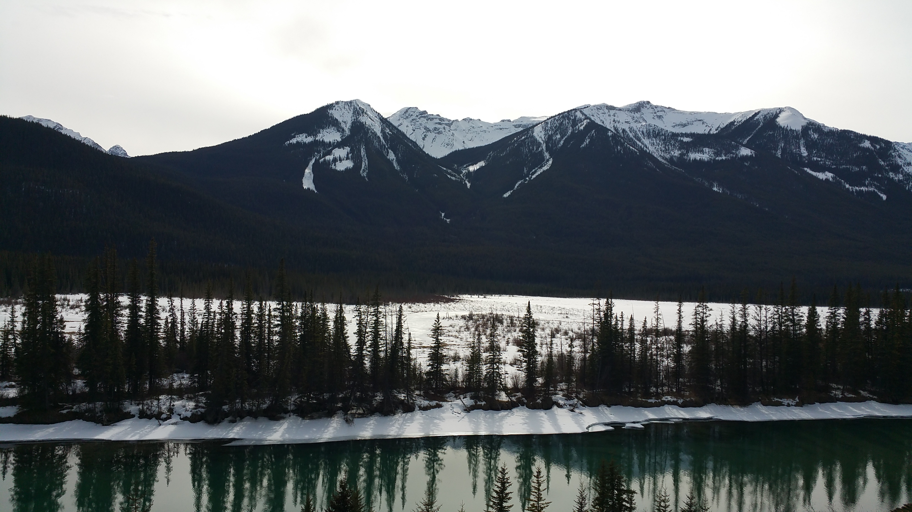

Bow River: To this day, this is one of my top 5 favorite locations. Located in Banff National Park near Johnstone park, this scenic view was something we had to stop for, and I'm glad we did.
The weather was a chilly 20 degrees fahrenheit, but thanks to all the layers I was wearing, I was still warm.
If you every have the chance to travel to Banff, then you must go to the Johnston Canyon Ice Walks. On your way there, stop here.

Big Sur: If you ever feel like taking a long winding drive, then look no further than Highway 1. The drive is especially amazing near Big Sur.
Depending on the time of year, you'll be greeted with a brisk wall of fog, calmy waiting for you near the shore.

Chihuly Glass and Garden: Glassblowing is an extremely difficult art to learn, but it's also the most rewarding.
This museum present magnficent piecies of art, created by Dale Chihuly himself. If you're a fan of fire, you should look into glassblowing.

Deception Island: My best friend guided me to this missleading island. It sounds like a island straight out of Mortal Kombat. However, this park is anything but deceiving.
This park was isolated, and beautiful. Not to mention the fact that it was a quick escape from the Seattle cloudiness that brins everyone down.

Glass Beach: This beach was made famous by the recycled glass which was laid near the beach. Over time, the waves smashed the glass to shore, grinding and sanding the glass down until the shards turned into smooth pebbles.
Be warned, this location is COLD.

Grand Canyon: I first traveled here back in 2012, on a quick getaway from school. Needless to say, this place is HUGE. It's vast, and empty, and it makes you realize how tiny you are compared to the size of mother earth.

Colosseum: It's a given that if you go to rome, you'll go to the Colosseum. It speaks for itself! It's a fantastic peace of roman architecture, that sadly had a long line to enter...

Maramec Caverns: On a roadtrip across the country, my brother-in-law and I stopped here to take a break from all the driving. I had no clue where we were, but I didn't care. We ended taking one hell of tour through the bottom of a mountain, gazing into one of the most beautiful caverns in the country.

Monterey Bay Aquarium: You like fish? Me too! You like jelly fish? I bet you do! This is just one of those places that everyone goes to. It's like Disney Land, but with out the Disney...or the Land! Or those long lines...Mickey Mouse can take a back seat to this, instead, take your kids to go see some jelly fish!

Mossbrae Falls: On the way up to Seattle, we stopped in Dunsmiur, CA, just for this waterfall. It required us to park on the side of a road. Walk through some random neighborhood. Hike next to a train track for more than a mile. Then finally arrive at this beauitful waterfall.
Why? Because life is to short to not risk being hit by a train to see water fall down rocks, that's why!

Pfeiffer Beach: This beach has purple sand. PURPLE SAND. That is, sand which(ha...sandwich) is purple! Located in Big Sur, this beach is quite the view!
Sadly, be careful when you go, as there is a cash only entrance, and parking is limited.

Seattle Great Ferris Wheel: Oh Seattle, we have a love hate relationship you and I. On one hand, you're gloomy, expensive, and home to the Seahawks and that whiney Richard Sherman.
But, you have big sparkly wheels the sping on their axis. All is forgiven.

Sunset Cliffs: This is a MUST STOP in San Diego! What are you waiting for? GO! But make sure you go during sunset, because it's in the name.
And stop by Old Town for some warm tortillas too. Just trust me on this.

Zermatt: I love Switzerland. And I especially love Zermatt. This little town is downhill from the Swiss Alps, and boy...is it an amazing view. This travel is quite a store actually.
But, long story short. Air Bnb. Our $200 wasn't ready. We were instead placed in a $2.5 million condo for our vacation. Boom.